ARCHIVE
타운하우스 평지붕 옥상누수 - 액체고무방수
타운하우스 평지붕 옥상 누수 현장. 드레인 주변 구배와 파라펫·조인트 균열을 정리하고 초급결지수제와 크랙실란트로 보수한 뒤 침투성 액상고무방수와 탄성도막방수로 마감한 사례입니다.

현장 개요
• 타운하우스 평지붕 옥상의 누수로, 물만 새지 않으면 되는 조건의 의뢰였습니다. 우레탄방수는 공사비가 많이 나와 액체고무방수로 진행했습니다.
시공 전 상태
• 옥상 바닥이 많이 손상되어 있었고, 기존 방수는 우레탄이 아니라 에폭시였습니다.
• 기존 드레인은 바닥형이었고, 드레인 주변 구배가 좋지 않아 물이 고였던 흔적이 있었습니다.
• 파라펫 안쪽에 균열이 있었고, 균열을 통해 바닥으로 누수가 진행됐을 가능성이 보였습니다.
• 바닥 조인트에도 균열이 있었습니다. 신축 시 조인트 방수를 하지 않았던 것으로 추정됩니다.
시공 과정
1. 튀어나온 PVC 파이프를 절단하고 주변을 그라인딩·샌딩해 구배를 맞췄습니다.
2. 드레인 주변은 박막 시공이 가능한 초급결지수제(마페이 CX1)로 보수했습니다. 거주 세대가 있어 철거 진동을 줄이기 위한 선택이며, 하루 만에 처리했습니다.
3. 조인트 균열은 크랙실란트로 처리했습니다.
4. 바탕 습기를 제거해 마른 상태에서 바닥방수를 시작했습니다.
5. 침투성 액상고무방수제를 스프레이와 롤러로 도포했습니다.
6. 마감 품질을 높이기 위해 탄성도막방수제(코타실F)를 시공했습니다.
시공 사진
• 시공 전, 시공 중(그라인딩·보수·액상고무 도포), 탄성도막방수 시공 완료 사진을 작업 순서대로 실었습니다.
BEFORE시공 전
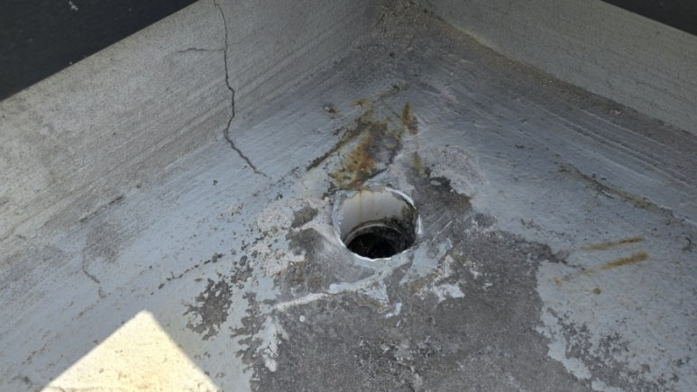
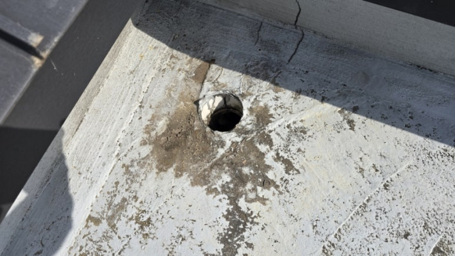
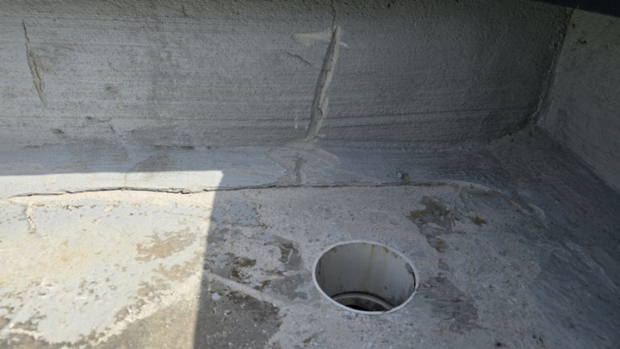
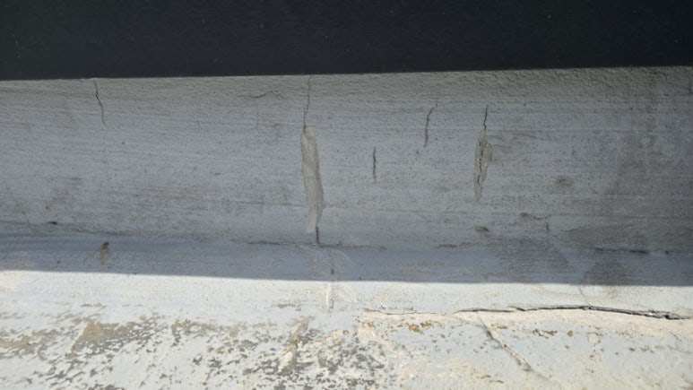
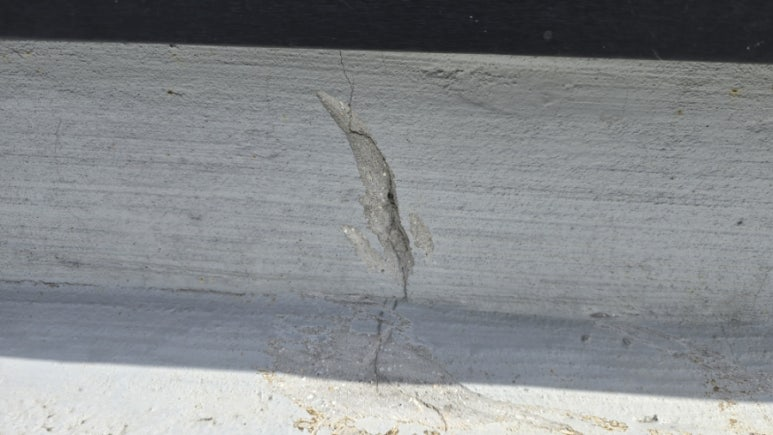
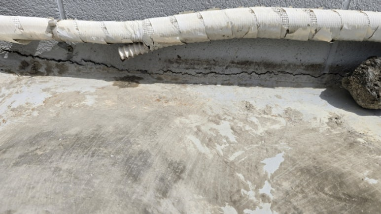
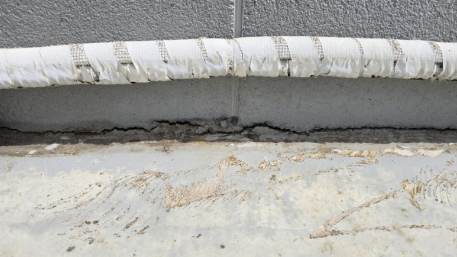
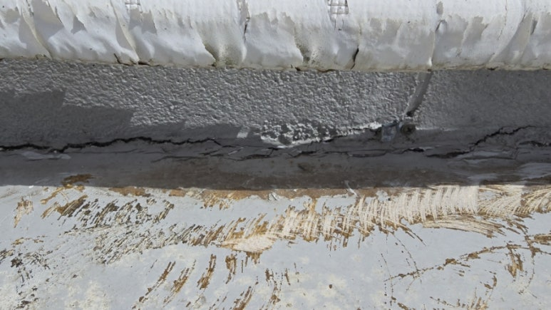
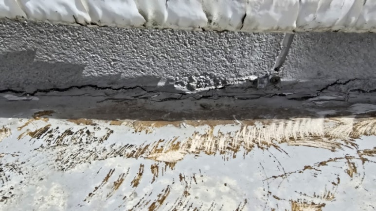
PROCESS시공 중
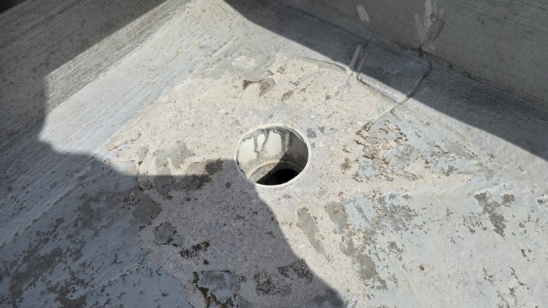
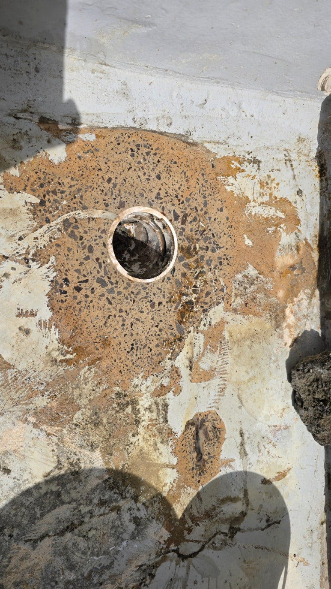
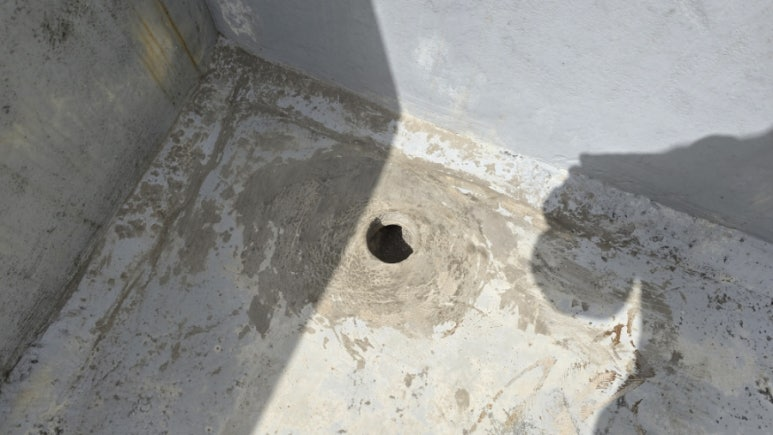
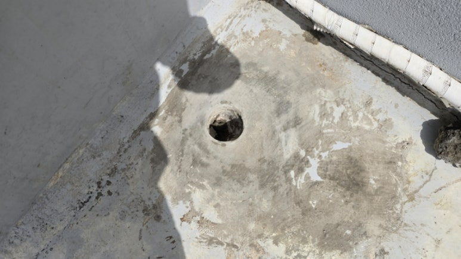
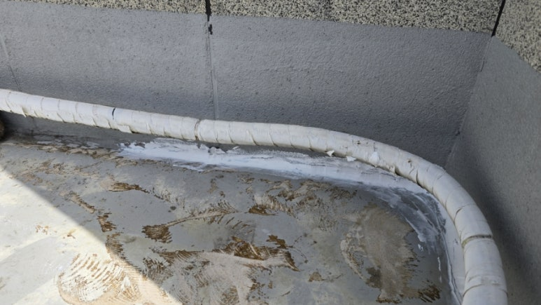
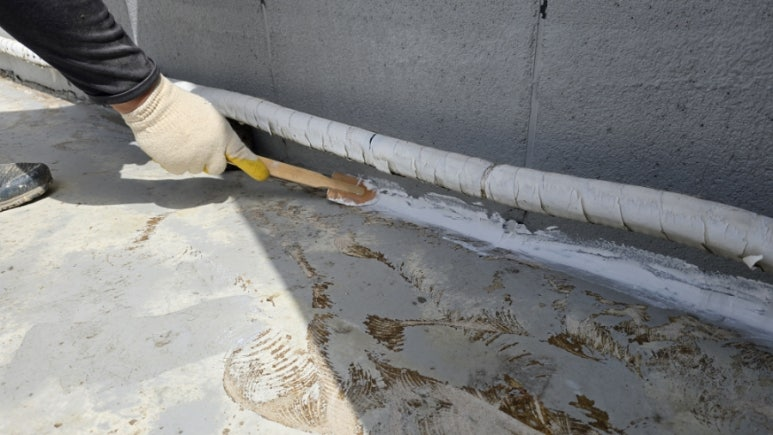
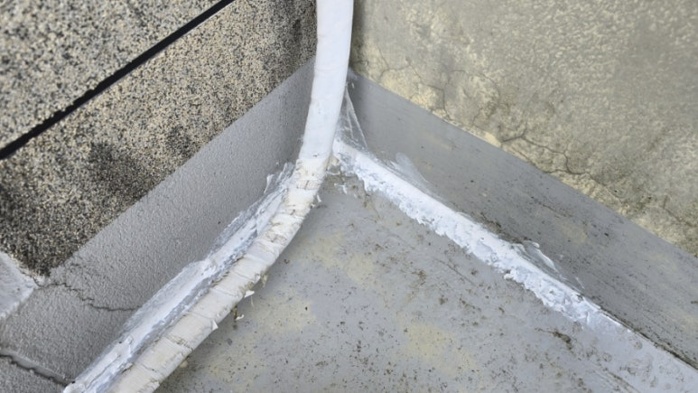
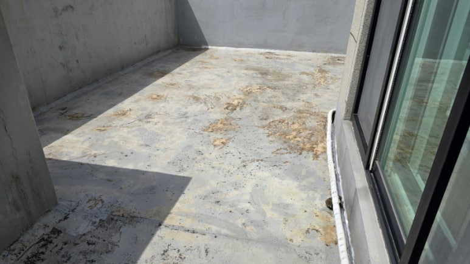
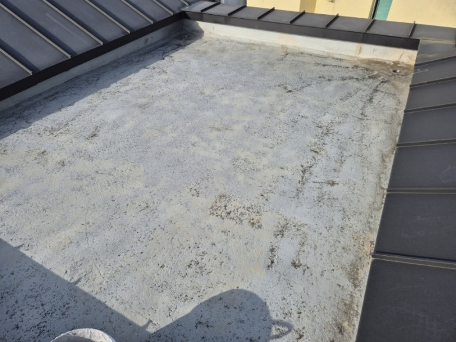
AFTER시공 후
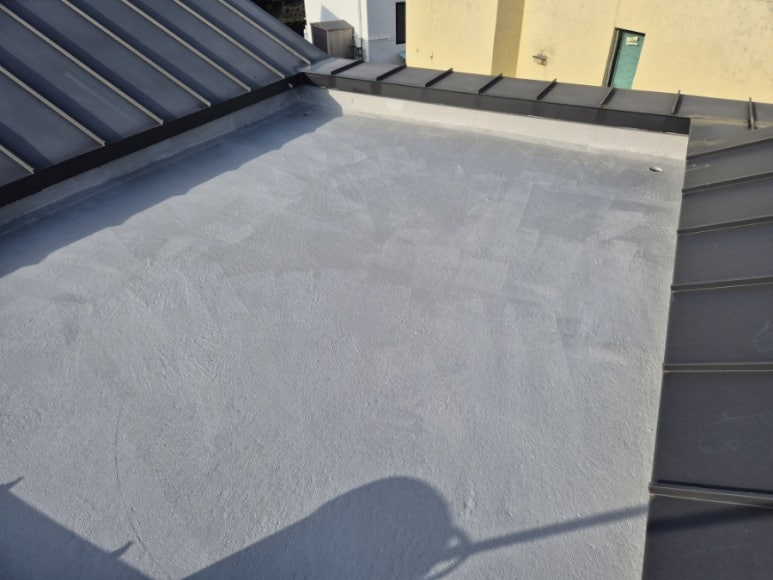